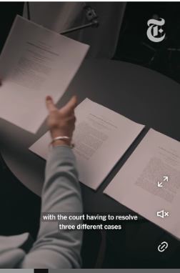
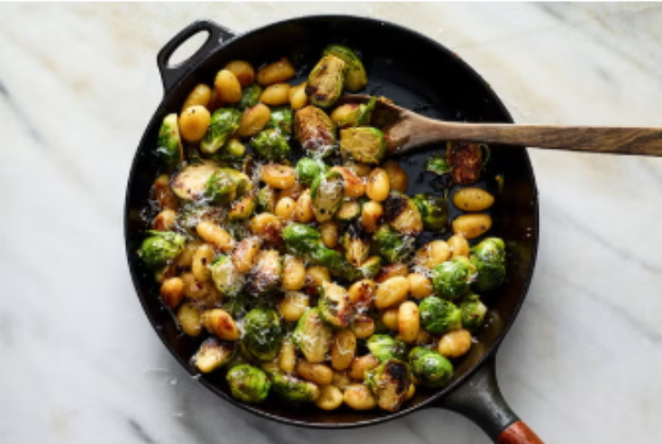
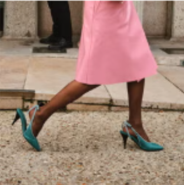

Estas historias principales son de lectura gratuita.
Cómo las elecciones intermedias podrían complicar el nuevo periodo de la Suprema Corte
Incluso antes de que los jueces comiencen su nuevo periodo hoy, el tribunal ha pasado el verano resolviendo solicitudes de respuesta rápida sobre disputas electorales.

Jueces escucharán una demanda ambiental de gran escala
La Suprema Corte comenzará su periodo con un caso histórico sobre si los gobiernos locales pueden demandar a las compañías petroleras por los daños causados por el cambio climático.

Esta receta de ñoquis con coles de Bruselas tiene más de 27,000 valoraciones
"¿Quieres mejorar un día entre semana? Cocina esto. ¿Quieres niños felices? Cocina esto. ¿Quieres deslumbrar a tus invitados? Cocina esto," escribió un lector.
